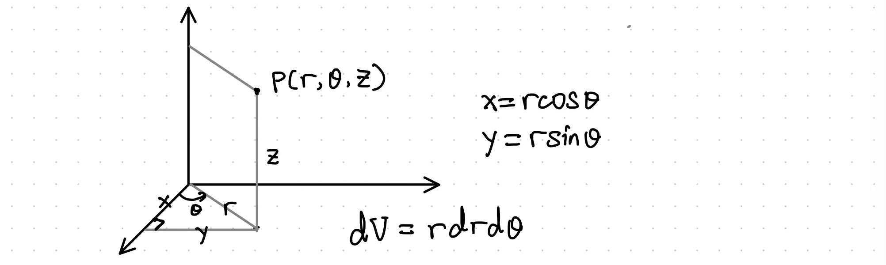
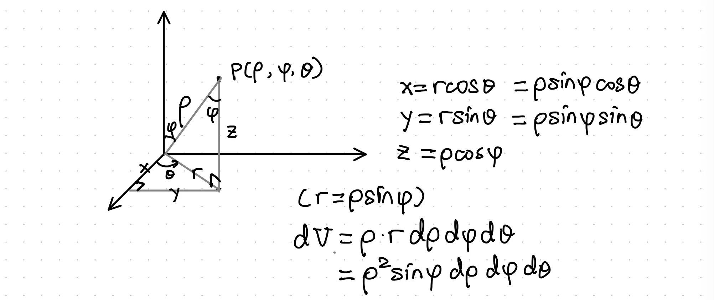

Example 1: Let $R$ be the bounded region between $y-x=2$ and $y=x^2$. Find $\iint_R(2x+4y)dA$.
Solution:
Definitions:
Example 2: Re-express $\iint_Rf(x,y)dxdy$ as a double integral in polar coordinates.
You may be wondering where the Jacobian determinant comes from. Here's a simple example:
$$\begin{aligned}dx&=\cos\theta dr-r\sin\theta d\theta\\dy&=\sin\theta dr+r\cos\theta d\theta\end{aligned}$$
Rewriting the formula in matrix form gives us:
$$\begin{bmatrix}dx\\dy\end{bmatrix}=\begin{bmatrix}\cos\theta&-r\sin\theta\\\sin\theta&r\cos\theta\end{bmatrix}\begin{bmatrix}dr\\d\theta\end{bmatrix}$$
In algebra, we can compute the area by taking the cross product of the two vectors. (Remember that $\hat{a}\times\hat{a}=0$ and $\hat{a}\times\hat{b}=-\hat{b}\times\hat{a}$):
$$\begin{aligned}dx\times dy&=(\cos\theta dr-r\sin\theta d\theta)\times(\sin\theta dr+r\cos\theta d\theta)\\&=\cos\theta\sin\theta(dr\times dr)-r\sin^2\theta (d\theta\times dr)+\\&r\cos^2\theta (dr\times d\theta)-r\sin\theta\cos\theta(d\theta\times d\theta)\\&=r(\sin^2\theta+\cos^2\theta)dr\times d\theta\end{aligned}$$
Example 3: Re-express $\iiint_{T}f(x,y,z)dxdydz$ as a triple integral in cylindrical coordinates.
You can see the cylindrical coordinates in the following picture.

To convert from cylindrical coordinates $(r,\theta,z)$ to rectangular coordinates $(x,y,z)$:
$$\begin{aligned}x&=r\cos\theta\\y&=r\sin\theta\\z&=z\end{aligned}$$
Then: $$\begin{aligned}dx&=\cos\theta dr-r\sin\theta d\theta\\dy&=\sin\theta dr+r\cos\theta d\theta\\dz&=dz\end{aligned}$$
The volume element becomes:
$$\begin{aligned}dV&=dx\times dy\times dz\\&=(\cos\theta dr-r\sin\theta d\theta)\times(\sin\theta dr+r\cos\theta d\theta)\times dz\\&=rdrd\theta dz\end{aligned}$$
Example 4: Re-express $\iiint_{T}f(x,y,z)dxdydz$ as a triple integral in spherical coordinates.
The following figure shows the spherical coordinates.

Conversion between spherical coordinates and rectangular coordinates (Recall that $r=\rho\sin\phi$):
$$\begin{aligned}x&=r\cos\theta=\rho\sin\phi\cos\theta\\y&=r\sin\theta=\rho\sin\phi\sin\theta\\z&=\rho\cos\phi\end{aligned}$$
So $$\begin{aligned}dx&=\sin\phi\cos\theta d\rho+\rho\cos\theta\cos\phi d\phi-\rho\sin\phi\sin\theta d\theta\\dy&=\sin\phi\sin\theta d\rho+\rho\sin\theta\cos\phi d\phi+\rho\sin\phi\cos\theta d\theta\\dz&=\cos\phi d\rho-\rho\sin\phi d\phi\end{aligned}$$
We now have
$$\begin{aligned}dV&=dx\times dy\times dz\\&=(\sin\phi\cos\theta d\rho+\rho\cos\theta\cos\phi d\phi-\rho\sin\phi\sin\theta d\theta)\times\\&(\sin\phi\sin\theta d\rho+\rho\sin\theta\cos\phi d\phi+\rho\sin\phi\cos\theta d\theta)\times(\cos\phi d\rho-\rho\sin\phi d\phi)\\&=(\rho\sin\phi\cos\phi\sin\theta\cos\theta d\phi d\rho-\rho\sin^2\phi\sin^2\theta d\theta d\rho-\\&\rho\sin\phi\cos\phi\sin\theta\cos\theta d\phi d\rho-\rho^2\sin\phi\sin^2\theta\cos\phi d\theta d\phi+\\&\rho\sin^2\phi\cos^2\theta d\rho d\theta+\rho^2\sin\phi\cos^2\theta\cos\phi d\phi d\theta)\times(\cos\phi d\rho-\rho\sin\phi d\phi)\\&=(\rho\sin^2\phi\sin^2\theta d\rho d\theta+\rho^2\sin\phi\sin^2\theta\cos\phi d\phi d\theta+\\&\rho\sin^2\phi\cos^2\theta d\rho d\theta+\rho^2\sin\phi\cos^2\theta\cos\phi d\phi d\theta)\times(\cos\phi d\rho-\rho\sin\phi d\phi)\\&=(\rho\sin^2\phi d\rho d\theta+\rho^2\sin\phi\cos\phi d\phi d\theta)\times(\cos\phi d\rho-\rho\sin\phi d\phi)\\&=\rho^2\sin\phi\cos^2\phi d\phi d\theta d\rho-\rho^2\sin^3\phi d\rho d\theta d\phi\\&=\rho^2\sin\phi(\sin^2\phi+\cos^2\phi) d\rho d\phi d\theta\\&=\rho^2\sin\phi d\rho d\phi d\theta\end{aligned}$$
(Finally done. 🤯)
Example 5: Use a triple integral in cylindrical coordinates to find the volume of the sphere $x^2+y^2+z^2=a^2$.
Solution:
The cylindrical equation of the sphere is $r^2+z^2=a^2$, so the equation of the upper hemisphere is $z=\sqrt{a^2-r^2}$.
Applying symmetry, we have:
$$\begin{aligned}V&=2\int_0^{2\pi}\int_0^a\int_0^{\sqrt{a^2-r^2}}rdzdrd\theta\\ &=2\int_0^{2\pi}d\theta\int_0^a r\sqrt{a^2-r^2}dr\\ &=-\int_0^{2\pi}\left[\frac23(a^2-r^2)^{\frac32}\right]^a_0d\theta\\ &=\int_0^{2\pi}\frac23a^3d\theta\\ &=\frac43\pi a^3 \end{aligned}$$
Example 6: Use a triple integral in spherical coordinates to find the volume of the sphere $x^2+y^2+z^2=a^2$.
Solution:
The equation of this sphere is $\rho=a$.
Then:
$$\begin{aligned}V&=\int_0^{2\pi}\int_0^\pi\int_0^a\rho rd\rho d\phi d\theta\\ &=\int_0^{2\pi}\int_0^\pi\int_0^a\rho^2\sin\phi d\rho d\phi d\theta\\ &=\int_0^{2\pi}\int_0^\pi\frac{a^3}3\sin\phi d\phi d\theta\\ &=\int_0^{2\pi}\frac{a^3}3[-\cos\phi]_0^\pi d\theta\\ &=\frac{a^3}3\int_0^{2\pi}2d\theta\\ &=\frac43\pi a^3 \end{aligned}$$